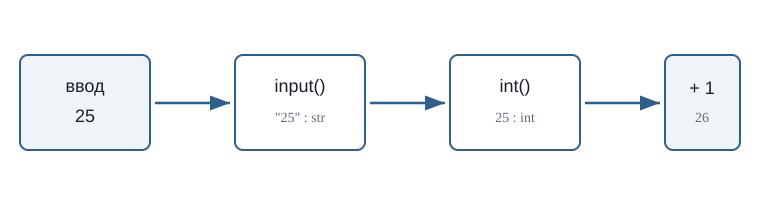
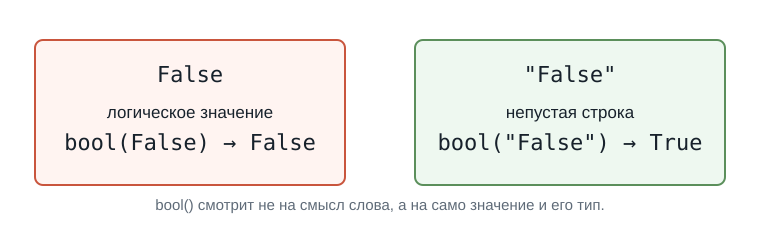
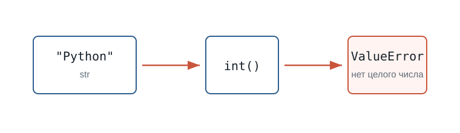

3.4 Преобразование типов
Главный вопрос главы:
Как превратить значение одного типа в значение другого типа?
В предыдущей главе мы столкнулись с важной проблемой.
Пользователь вводит:
25Но input() возвращает:
"25"То есть не число:
25 → intа строку:
"25" → strПока мы просто выводим значение, это не мешает:
age = input("Сколько вам лет? ")
print("Ваш возраст:", age)Но как только появляется арифметика, возникает проблема:
age = input("Сколько вам лет? ")
print(age + 1)Если пользователь введёт:
25Python фактически попытается выполнить:
"25" + 1Слева находится str, справа — int.
Поэтому программа завершится с ошибкой TypeError.
Чтобы выполнить вычисление, нам нужно превратить строку:
"25"в число:
25Именно для этого в Python используется преобразование типов.
Что такое преобразование типов
Преобразование типов позволяет получить значение одного типа на основе значения другого типа.
Например:
"25" → 25
str intили:
"3.14" → 3.14
str floatили наоборот:
25 → "25"
int strДля этого Python предоставляет специальные функции.
Основные из них:
int()
float()
str()
bool()Каждая функция пытается создать значение определённого типа.
Например:
int("25")возвращает:
25Теперь это уже настоящее целое число.
Первое преобразование
Вернёмся к нашей программе:
age = input("Сколько вам лет? ")После ввода 25:
age → "25" → strПопробуем преобразовать значение:
age = int(age)Теперь:
age → 25 → intПроверим:
Если пользователь введёт:
25получим:
<class 'str'>
<class 'int'>Тип значения действительно изменился.
Можно читать:
int(age)примерно так:
«Получить целое число из значения
age».
Функция int()
Функция int() используется для получения целого числа.
Например:
Результат:
42
<class 'int'>До преобразования:
"42" → strПосле:
42 → intНа экране значения выглядят почти одинаково.
Но для Python это разные типы данных.
И теперь с числом можно выполнять арифметические операции:
number = int("42")
print(number + 8)Результат:
50Исправляем программу с возрастом
Теперь мы можем решить проблему из предыдущей главы.
Было:
age = input("Сколько вам лет? ")
print(age + 1)Эта программа не работает, потому что age содержит строку.
Добавим преобразование:
age = input("Сколько вам лет? ")
age = int(age)
print(age + 1)Пример работы:
Сколько вам лет? 25
26Теперь последовательность выглядит так:
Пользователь вводит
↓
25
↓
input()
↓
"25"
↓
str
↓
int()
↓
25
↓
int
↓
вычислениеЭто одна из самых распространённых схем при работе с пользовательским вводом.

Преобразование можно выполнить сразу
Мы написали:
age = input("Сколько вам лет? ")
age = int(age)Но эти действия можно объединить:
age = int(input("Сколько вам лет? "))Разберём выражение изнутри.
Сначала выполняется:
input("Сколько вам лет? ")Пользователь вводит:
25input() возвращает:
"25"Затем выполняется:
int("25")и получается:
25И только после этого значение сохраняется:
age → 25 → intЭти программы делают одно и то же:
age = input("Сколько вам лет? ")
age = int(age)и:
age = int(input("Сколько вам лет? "))Второй вариант короче.
Первый иногда удобнее для начинающих, потому что хорошо показывает каждый шаг.
Попробуйте сами
Создайте программу:
number = int(input("Введите число: "))
print("Вы ввели:", number)
print("Тип:", type(number))
print("Следующее число:", number + 1)Запустите её несколько раз.
Введите:
10затем:
100затем:
-5Перед каждым запуском попробуйте предсказать результат.
int() работает не с любой строкой
Рассмотрим:
number = int("25")Это работает.
Python понимает, как строку:
"25"превратить в целое число:
25Но попробуем:
number = int("Python")Что должно получиться?
Python не может превратить слово:
Pythonв целое число.
Поэтому возникнет ошибка:
ValueErrorТо же самое произойдёт, если пользователь введёт текст там, где программа ожидает число:
age = int(input("Сколько вам лет? "))и пользователь введёт:
двадцать пятьPython попытается выполнить:
int("двадцать пять")и не сможет выполнить преобразование.
Функция int() не превращает любой текст в число.
Работает:
int("25")
int("-10")
int("0")Не работает:
int("Python")
int("пять")
int("hello")Дробные числа и float()
До сих пор мы работали с целыми числами.
Но пользователь может ввести:
3.14После input() мы снова получим строку:
"3.14"Попробуем:
number = int("3.14")Такое преобразование не сработает.
3.14 — не целое число.
Для дробных чисел используется функция:
float()Например:
number = float("3.14")
print(number)
print(type(number))Результат:
3.14
<class 'float'>Получается:
"3.14" → 3.14
str floatfloat() вместе с input()
Предположим, программа спрашивает рост пользователя:
height = input("Введите рост в метрах: ")Пользователь вводит:
1.75Но программа получает:
"1.75"Для вычислений нужно преобразовать значение:
height = float(height)Или сразу:
height = float(input("Введите рост в метрах: "))Теперь:
height → 1.75 → floatНапример:
Когда использовать int(), а когда float()
Если программа ожидает целое число, обычно используется:
int()Например:
age = int(input("Возраст: "))
year = int(input("Год: "))
count = int(input("Количество: "))Если значение может содержать дробную часть:
float()Например:
height = float(input("Рост: "))
weight = float(input("Вес: "))
price = float(input("Цена: "))
temperature = float(input("Температура: "))Можно представить так:
целое значение
↓
int()
дробное значение
↓
float()Спросите себя:
Может ли у этого значения быть дробная часть?
Если нет:
int()Если да:
float()Пример: стоимость покупки
Напишем программу, которая спрашивает цену товара и количество.
Пример работы:
Цена товара: 12.5
Количество: 4
Стоимость: 50.0Здесь используются два разных преобразования:
"12.5" → 12.5 → float
"4" → 4 → intПосле преобразования Python может выполнить умножение.
Преобразование float в int
int() умеет работать не только со строками.
Например:
Результат:
5Дробная часть исчезла.
Ещё примеры:
print(int(3.9))
print(int(7.2))
print(int(-4.8))Результат:
3
7
-4int() не округляет число.
Например:
int(9.99)даёт:
9а не:
10При преобразовании float в int дробная часть отбрасывается.
Преобразование int в float
Можно выполнить и обратное преобразование:
number = 10
result = float(number)
print(result)
print(type(result))Результат:
10.0
<class 'float'>Получается:
10 → 10.0
int floatЗначение по-прежнему представляет десять, но его тип изменился.
Функция str()
До сих пор мы превращали строки в числа.
Но можно сделать наоборот.
Функция:
str()преобразует значение в строку.
Например:
age = 25
text = str(age)
print(text)
print(type(text))Результат:
25
<class 'str'>Получается:
25 → "25"
int strЗачем превращать число в строку
Рассмотрим:
age = 25
message = "Возраст: " + ageТакой код вызовет ошибку.
Python видит:
str + intНо если преобразовать число:
age = 25
message = "Возраст: " + str(age)
print(message)получим:
Возраст: 25Теперь Python фактически выполняет:
"Возраст: " + "25"То есть:
str + strЭто допустимая операция.
Если вы просто выводите значения через запятую:
age = 25
print("Возраст:", age)вызывать str() не требуется.
print() умеет выводить значения разных типов.
Функция bool()
Ещё одна функция преобразования:
bool()Она создаёт логическое значение:
Trueили:
FalseНапример:
print(bool(1))
print(bool(0))Результат:
True
FalseДля чисел правило можно начать понимать так:
0 → False
не 0 → TrueНапример:
print(bool(0))
print(bool(5))
print(bool(-10))
print(bool(3.14))Результат:
False
True
True
TrueСтроки и bool()
Пустая строка преобразуется в:
FalseНапример:
print(bool(""))Результат:
FalseНепустая строка:
print(bool("Python"))даёт:
TrueТо есть:
"" → False
"Python" → TrueНо здесь есть важная особенность.
Рассмотрим:
print(bool("False"))Какой будет результат?
TrueПочему?
Потому что строка:
"False"не пустая.
Python в данном случае не пытается понять значение написанного слова.
Это разные значения:
Falseи:
"False"Первое имеет тип:
boolВторое:
strПоэтому:
bool(False)даёт False, а:
bool("False")даёт True.

Тип до и после преобразования
Функция type() помогает увидеть результат преобразования.
Например:
value = "100"
print(type(value))
value = int(value)
print(type(value))Результат:
<class 'str'>
<class 'int'>Можно экспериментировать:
Так хорошо видно, как значение последовательно получает разные типы.
Преобразование не всегда возможно
Мы уже видели:
int("Python")Такое преобразование невозможно.
То же относится к float():
float("hello")Python не знает, какое число должно соответствовать слову "hello".
Поэтому возникает ValueError.
Запустите пример и посмотрите на сообщение об ошибке:
Попробуйте заменить "Python" на "12.8".
Это тоже приведёт к ValueError, потому что строка "12.8" описывает дробное число, а не целое.

При работе с пользовательским вводом это особенно важно.
Программа может ожидать:
Введите возраст: 25но пользователь способен написать:
Введите возраст: двадцать пятьНа этом этапе нашего курса достаточно помнить:
Преобразование работает только тогда, когда исходное значение можно представить в нужном типе.
Позже мы научимся обрабатывать неправильный пользовательский ввод.
Попробуйте предсказать результат
Не запускайте код сразу.
Сначала попробуйте определить результат самостоятельно.
a = int("10")
b = float("2.5")
print(a)
print(b)
print(a + b)Получим:
10
2.5
12.5a имеет тип int, а b — float.
Python может выполнять арифметические операции с этими числовыми типами.
Что важно запомнить
Преобразование типов позволяет получить значение одного типа из значения другого типа.
Основные функции:
int() → целое число
float() → дробное число
str() → строка
bool() → логическое значениеОсобенно часто преобразование используется после input():
age = int(input("Возраст: "))или:
price = float(input("Цена: "))Главная схема:
Пользователь
↓
input()
↓
str
↓
преобразование
↓
нужный тип
↓
вычисленияИ самое важное:
Тип значения должен соответствовать тому, что программа собирается с этим значением делать.
Если нужно считать — обычно требуется число.
Если нужно работать с текстом — строка.
Если значение пришло через input(), сначала помните:
input() → strи только затем решайте, требуется ли преобразование.
Что дальше?
Теперь мы умеем получать данные пользователя:
input()и превращать их в нужный тип:
int()
float()
str()
bool()Теперь программа может не только получать данные, но и готовить их к настоящим вычислениям.
Например:
price = float(input("Цена: "))
count = int(input("Количество: "))
print("Итого:", price * count)Следующий главный вопрос:
Как Python выполняет арифметические операции?
Этому посвящена следующая глава:
«Арифметические операции».
Практические задания
Задание 1. Возраст через год
Напишите программу, которая спрашивает возраст пользователя и выводит, сколько ему будет через год.
Пример:
Сколько вам лет? 25
Через год вам будет: 26age = int(input("Сколько вам лет? "))
print("Через год вам будет:", age + 1)Задание 2. Два числа
Пользователь вводит два целых числа.
Программа должна вывести их сумму.
Пример:
Первое число: 10
Второе число: 7
Сумма: 17first = int(input("Первое число: "))
second = int(input("Второе число: "))
print("Сумма:", first + second)Задание 3. Цена покупки
Пользователь вводит цену одного товара и количество товаров.
Цена может быть дробной.
Вычислите общую стоимость.
Пример:
Цена: 12.5
Количество: 4
Итого: 50.0price = float(input("Цена: "))
count = int(input("Количество: "))
total = price * count
print("Итого:", total)Задание 4. Предскажите типы
Не запускайте программу сразу.
a = int("15")
b = float("15")
c = str(15)
d = bool(15)Определите тип каждой переменной.
a → int
b → float
c → str
d → boolЗначения:
a == 15
b == 15.0
c == "15"
d == TrueЗадание 5. Найдите ошибку
Почему эта программа не работает?
temperature = input("Температура: ")
print(temperature + 5)Исправьте её так, чтобы пользователь мог вводить дробную температуру.
input() возвращает строку.
Поэтому Python пытается выполнить операцию примерно такого вида:
"20.5" + 5Нужно преобразовать ввод в float:
temperature = float(input("Температура: "))
print(temperature + 5)Задание 6. Задача со звёздочкой
Что произойдёт при выполнении программы?
value = "12.8"
number = int(value)
print(number)Сначала попробуйте ответить без запуска.
Программа завершится с ValueError.
Строку:
"12.8"нельзя напрямую преобразовать через:
int("12.8")потому что она содержит запись дробного числа.
Можно сначала получить float:
value = "12.8"
number = int(float(value))
print(number)Результат:
12При преобразовании 12.8 из float в int дробная часть отбрасывается.